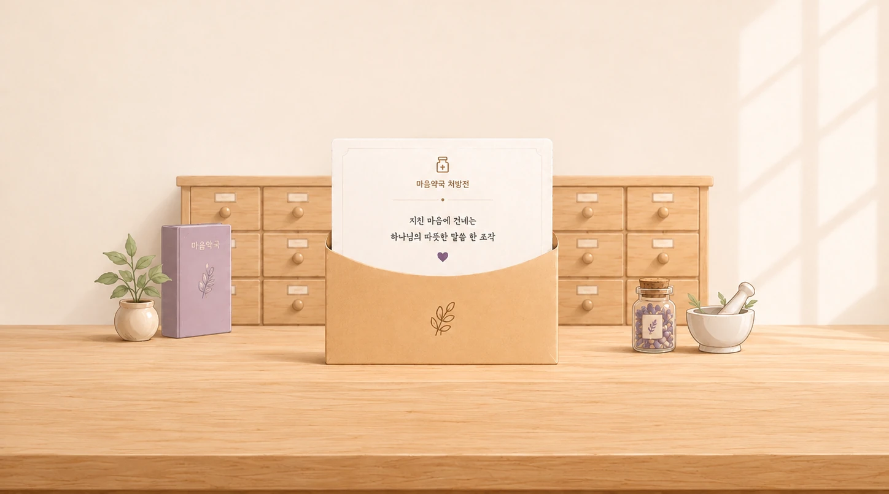

<!-- @dsCard group="Soul Pharmacy" viewport="1000x860" name="마음약국 · 메인 화면" subtitle="마음 증상 선택 (PC 4×2) → 자가문진" -->
<!DOCTYPE html>
<html lang="ko">
<head>
<meta charset="utf-8" />
<meta name="viewport" content="width=device-width, initial-scale=1" />
<link rel="stylesheet" href="../../styles.css" />
<script src="https://unpkg.com/lucide@0.544.0/dist/umd/lucide.min.js"></script>
<script src="https://unpkg.com/react@18.3.1/umd/react.development.js" integrity="sha384-hD6/rw4ppMLGNu3tX5cjIb+uRZ7UkRJ6BPkLpg4hAu/6onKUg4lLsHAs9EBPT82L" crossorigin="anonymous"></script>
<script src="https://unpkg.com/react-dom@18.3.1/umd/react-dom.development.js" integrity="sha384-u6aeetuaXnQ38mYT8rp6sbXaQe3NL9t+IBXmnYxwkUI2Hw4bsp2Wvmx4yRQF1uAm" crossorigin="anonymous"></script>
<script src="https://unpkg.com/@babel/standalone@7.29.0/babel.min.js" integrity="sha384-m08KidiNqLdpJqLq95G/LEi8Qvjl/xUYll3QILypMoQ65QorJ9Lvtp2RXYGBFj1y" crossorigin="anonymous"></script>
<script src="https://cdn.jsdelivr.net/npm/@supabase/supabase-js@2/dist/umd/supabase.js"></script>
<script src="../../_ds_bundle.js"></script>
<template id="__bundler_thumbnail" data-bg-color="#F3EEE9">
  <svg viewBox="0 0 1200 800" xmlns="http://www.w3.org/2000/svg">
    <rect width="1200" height="800" fill="#F3EEE9"/>
    <rect x="250" y="300" width="700" height="34" rx="10" fill="#C8A578"/>
    <rect x="360" y="320" width="200" height="250" rx="16" fill="#B7D3C1"/>
    <path d="M360 320 h200 v40 l-100 46 -100 -46 z" fill="#A6C6B1"/>
    <rect x="640" y="320" width="200" height="250" rx="16" fill="#EFB19A"/>
    <path d="M640 320 h200 v40 l-100 46 -100 -46 z" fill="#E59E85"/>
    <text x="600" y="680" font-family="serif" font-size="60" fill="#3E3730" text-anchor="middle">마음약국</text>
  </svg>
</template>
<style>
  html, body { margin: 0; background: var(--bg-page); font-family: var(--font-body); }
  #root { min-height: 100vh; display: flex; align-items: center; justify-content: center; box-sizing: border-box; }
  #root > * { width: 100%; }
  /* 폰 프레임 화면은 가운데 정렬 + 여백 유지 */
  #root .ios-device-frame { width: auto; margin: 24px auto; }
</style>
</head>
<body>
<div id="root"></div>
<script src="audio-manager.js"></script>
<script type="text/babel" src="ios-frame.jsx"></script>
<script src="image-slot.js"></script>
<script src="assessment-data.js"></script>
<script src="rx-data.js"></script>
<script src="stickers-data.js"></script>
<script src="https://cdn.jsdelivr.net/npm/html-to-image@1.11.11/dist/html-to-image.js"></script>
<script src="rx-prescriptions.js"></script>
<script>
  // 공유 기능용 Supabase 클라이언트 — anon(공개) 키, RLS로 insert/select만 허용됨.
  window.supabaseClient = window.supabase.createClient(
    "https://lfazwohmzcbizympcghw.supabase.co",
    "sb_publishable_LaF9N4HQLzwqiWT3sqsaYg_WhYU8daj"
  );
</script>
<script type="text/babel" src="LogoMark.jsx"></script>
<script type="text/babel" src="IntroSequence.jsx"></script>
<script type="text/babel" src="MainScreen.jsx"></script>
<script type="text/babel" src="AssessmentScreen.jsx"></script>
<script type="text/babel" src="ResultScreen.jsx"></script>
<script type="text/babel" src="StickerScreen.jsx"></script>
<script type="text/babel">
  // 링크 공유 상태: URL에는 Supabase의 짧은 공유 ID(?id=)만 있고, 실제 처방전/스티커
  // 상태는 Supabase에서 조회해 복원한다. 처방전 본문(성구·복용법 등)은 저장하지 않고
  // mood/rx_type/rx_num 세 값으로 프론트에 이미 있는 데이터에서 다시 찾는다.
  function getSharedId() {
    try {
      return new URLSearchParams(window.location.search).get("id");
    } catch (e) { return null; }
  }

  // 공유 링크 로딩 중 잠깐 보여주는 최소 화면 — 다른 화면과 같은 브랜드 배경만 유지.
  function ShareLoading() {
    return (
      <div style={{ minHeight: "100vh", width: "100%", boxSizing: "border-box", display: "flex", alignItems: "center", justifyContent: "center", backgroundColor: "#F3E8DA", backgroundImage: "url(assets-web/decorate-bg.png)", backgroundSize: "cover", backgroundPosition: "center center", backgroundRepeat: "no-repeat" }}>
        <style>{"@keyframes shareSpin{to{transform:rotate(360deg)}}"}</style>
        <div style={{ width: 34, height: 34, borderRadius: "50%", border: "3px solid rgba(107,95,207,0.22)", borderTopColor: "#6B5FCF", animation: "shareSpin 800ms linear infinite" }} />
      </div>
    );
  }

  // 공유 데이터 로딩이 끝난 뒤 잠깐 보여주는 감성 인트로 — 버튼 없이 몇 초 뒤 자동으로
  // 처방전 화면으로 넘어간다(DecorateIntro와 같은 패턴). 문구는 이미지 안에 포함되어 있음.
  function ShareIntro() {
    const { Icon } = window.DesignSystem_d4e5a3;
    const [vis, setVis] = React.useState(false);
    React.useEffect(() => {
      const t = setTimeout(() => setVis(true), 60);
      return () => clearTimeout(t);
    }, []);
    return (
      <div style={{ minHeight: "100vh", width: "100%", boxSizing: "border-box", display: "flex", flexDirection: "column", backgroundColor: "#F3E8DA" }}>
        <style>{`
          @keyframes shareIntroFade { from { opacity: 0; } to { opacity: 1; } }
          @keyframes shareIntroFadeUp { from { opacity: 0; transform: translateY(16px); } to { opacity: 1; transform: translateY(0); } }
        `}</style>
        <div style={{ flex: "0 0 auto", padding: "clamp(36px,7vh,64px) 32px 24px", textAlign: "center" }}>
          <div style={{ display: "flex", alignItems: "center", justifyContent: "center", gap: 8, opacity: 0, animation: vis ? "shareIntroFade 700ms ease-out 80ms forwards" : "none" }}>
            <Icon name="leaf" size={13} color="#9c7c4e" stroke={1.6} />
            <span style={{ fontFamily: "var(--font-body)", fontWeight: 600, fontSize: 13, letterSpacing: "0.22em", color: "#9c7c4e" }}>말씀 처방전</span>
            <Icon name="leaf" size={13} color="#9c7c4e" stroke={1.6} style={{ transform: "scaleX(-1)" }} />
          </div>
          <h1 style={{ margin: "16px 0 0", fontFamily: "var(--font-verse)", fontWeight: 600, fontSize: "clamp(26px,6vw,38px)", lineHeight: 1.45, color: "var(--ink-900)", opacity: 0, animation: vis ? "shareIntroFadeUp 800ms cubic-bezier(0.22,0.61,0.36,1) 260ms forwards" : "none" }}>
            당신에게<br />마음처방전이 도착했어요.
          </h1>
          <p style={{ margin: "16px 0 0", fontFamily: "var(--font-body)", fontSize: "clamp(14px,3vw,16px)", lineHeight: 1.7, color: "var(--text-muted)", opacity: 0, animation: vis ? "shareIntroFadeUp 800ms cubic-bezier(0.22,0.61,0.36,1) 520ms forwards" : "none" }}>
            소중한 누군가가<br />당신의 응원을 기다리고 있어요.
          </p>
        </div>
        <div style={{ flex: "1 1 auto", position: "relative", overflow: "hidden", opacity: 0, animation: vis ? "shareIntroFade 1100ms ease-out 200ms forwards" : "none" }}>
          
        </div>
      </div>
    );
  }

  // 공유 기간(7일)이 지났거나 존재하지 않는 링크로 들어온 경우.
  function ShareExpired({ onGoMain }) {
    return (
      <div style={{ minHeight: "100vh", width: "100%", boxSizing: "border-box", display: "flex", flexDirection: "column", alignItems: "center", justifyContent: "center", padding: "40px 32px", backgroundColor: "#F3E8DA", backgroundImage: "url(assets-web/decorate-bg.png)", backgroundSize: "cover", backgroundPosition: "center center", backgroundRepeat: "no-repeat" }}>
        <div style={{ maxWidth: 420, width: "100%", textAlign: "center" }}>
          <p style={{ fontFamily: "var(--font-title)", fontWeight: 700, fontSize: 22, lineHeight: 1.5, color: "var(--ink-900)", margin: "0 0 14px" }}>
            이 처방전의 공유 기간이 끝났어요.
          </p>
          <p style={{ fontFamily: "var(--font-body)", fontSize: 14.5, lineHeight: 1.7, color: "var(--text-muted)", margin: "0 0 30px" }}>
            공유 링크는 7일 동안만 열어볼 수 있어요.
          </p>
          <button onClick={onGoMain} style={{ display: "block", width: "100%", padding: "16px", borderRadius: 999, border: "none", cursor: "pointer", background: "linear-gradient(135deg,#ABA2ED,#8E86DE)", color: "#fff", fontFamily: "var(--font-body)", fontWeight: 700, fontSize: 16, boxShadow: "0 10px 24px rgba(107,95,207,0.28)" }}>
            새로운 마음 처방전을 받아보세요
          </button>
        </div>
      </div>
    );
  }

  // 화면 전환 크로스페이드: step이 바뀌면 이전 화면이 부드럽게 사라지고 새 화면이 페이드 인.
  function Fade({ step, children }) {
    const [shown, setShown] = React.useState({ step, children });
    const [visible, setVisible] = React.useState(true);
    React.useEffect(() => {
      if (step === shown.step) { setShown({ step, children }); return; }
      setVisible(false);
      const t = setTimeout(() => { setShown({ step, children }); setVisible(true); }, 340);
      return () => clearTimeout(t);
    }, [step, children]);
    return (
      <div style={{ width: "100%", opacity: visible ? 1 : 0, transform: visible ? "translateY(0)" : "translateY(10px)", transition: "opacity 340ms cubic-bezier(0.22,0.61,0.36,1), transform 340ms cubic-bezier(0.22,0.61,0.36,1)" }}>
        {shown.children}
      </div>
    );
  }

  // 처방전 꾸미기 안내 막 — 결과 → 꾸미기 사이. 문구가 페이드인, 약 2초 머문 뒤 페이드아웃.
  function DecorateIntro({ mood, onDone }) {
    const { Icon, MOODS } = window.DesignSystem_d4e5a3;
    const m = (MOODS && MOODS[mood]) || null;
    const [phase, setPhase] = React.useState(0);
    const [vis, setVis] = React.useState(false);
    React.useEffect(() => {
      const t0 = setTimeout(() => setVis(true), 60);
      const t1 = setTimeout(() => setVis(false), 2200);
      const t2 = setTimeout(() => { setPhase(1); }, 3000);
      return () => { clearTimeout(t0); clearTimeout(t1); clearTimeout(t2); };
    }, []);
    React.useEffect(() => {
      if (phase !== 1) return;
      const t0 = setTimeout(() => setVis(true), 60);
      const t1 = setTimeout(() => setVis(false), 2600);
      const t2 = setTimeout(() => onDone && onDone(), 3400);
      return () => { clearTimeout(t0); clearTimeout(t1); clearTimeout(t2); };
    }, [phase]);
    const tStyle = { fontFamily: "var(--font-title)", fontWeight: 600, fontSize: 22, lineHeight: 1.7, color: "var(--ink-900)", margin: 0 };
    return (
      <div style={{ minHeight: "100vh", width: "100%", boxSizing: "border-box", display: "flex", flexDirection: "column", alignItems: "center", justifyContent: "center", padding: "40px 32px", backgroundColor: "#F3E8DA", backgroundImage: "url(assets-web/decorate-bg.png)", backgroundSize: "cover", backgroundPosition: "center center", backgroundRepeat: "no-repeat" }}>
        <div style={{ maxWidth: 520, textAlign: "center", opacity: vis ? 1 : 0, transform: vis ? "translateY(0)" : "translateY(10px)", transition: "opacity 900ms cubic-bezier(0.22,0.61,0.36,1), transform 900ms cubic-bezier(0.22,0.61,0.36,1)" }}>
          {m && <div style={{ width: 72, height: 72, borderRadius: "50%", background: m.fill, display: "flex", alignItems: "center", justifyContent: "center", boxShadow: "0 10px 26px rgba(120,92,64,0.16)", margin: "0 auto 26px" }}><Icon name={m.icon} size={32} color={m.ink} stroke={1.5} /></div>}
          {phase === 0
            ? <p style={tStyle}>이제 받은 마음의 처방을<br/>나만의 방식으로 꾸며볼까요?</p>
            : <p style={tStyle}>완성된 처방전을 소중한 사람들에게 건네면,<br/>당신을 응원하는 사람들이<br/>마음을 담은 스티커를 붙여줄 거예요.</p>}
        </div>
      </div>
    );
  }

  function App() {
    const sharedId = getSharedId();
    const [step, setStep] = React.useState(sharedId ? "shareLoading" : "intro"); // shareLoading | shareIntro | shareExpired | intro | main | assessment | result | sticker
    const [mood, setMood] = React.useState(null);
    const [sharedStickers, setSharedStickers] = React.useState([]);
    const [shareId, setShareId] = React.useState(null); // 로드에 성공한 공유의 id — StickerScreen에 넘겨 이후 추가 스티커도 같은 공유에 누적
    const [sharedExtraH, setSharedExtraH] = React.useState(0); // 공유 시점의 "공간 늘리기/줄이기" 최종값
    const [rx, setRx] = React.useState(null);

    const goMainFresh = () => {
      window.history.replaceState(null, "", window.location.pathname);
      setStep("main");
    };

    // ?id= 공유 링크로 들어온 경우: Supabase에서 처방전(mood/rx_type/rx_num)과 그동안 쌓인
    // 응원 스티커(rx_share_stickers)를 조회해 복원한다. 본문은 저장돼있지 않고 프론트 데이터에서
    // 재구성하며, expires_at이 지난 공유는 RLS가 애초에 select 결과에서 제외한다.
    React.useEffect(() => {
      if (!sharedId) return;
      let cancelled = false;
      (async () => {
        try {
          if (!window.supabaseClient) throw new Error("no-client");
          const { data, error } = await window.supabaseClient
            .from("rx_shares").select("*").eq("id", sharedId).single();
          if (error || !data) throw error || new Error("not-found-or-expired");
          const resolved = window.resolvePrescriptionByNum(data.mood, data.rx_type, data.rx_num);
          if (!resolved) throw new Error("unresolvable");
          const { data: stickerRows } = await window.supabaseClient
            .from("rx_share_stickers").select("*").eq("share_id", sharedId).order("created_at", { ascending: true });
          if (cancelled) return;
          setMood(data.mood);
          setRx(resolved);
          setShareId(sharedId);
          setSharedExtraH(data.extra_h || 0);
          // x/y/scale은 카드 기준 정규화 값(x:%, y:카드 높이 비율, scale:카드 너비 비율) 그대로
          // 넘긴다 — 이 세션의 실제 카드 크기로 변환하는 건 StickerScreen이 mount 후에 한다.
          setSharedStickers((stickerRows || []).map((row) => ({
            src: row.sticker_asset_id, x: row.x, y: row.y, scale: row.scale, rotate: row.rotate,
          })));
          setStep("shareIntro"); // 몇 초간 감성 인트로를 보여준 뒤 자동으로 처방전 화면으로 넘어감
        } catch (e) {
          if (!cancelled) setStep("shareExpired"); // 만료/삭제/존재하지 않는 링크
        }
      })();
      return () => { cancelled = true; };
    }, [sharedId]);

    // shareIntro는 버튼 없이 몇 초 보여준 뒤 자동으로 처방전 화면으로 넘어간다.
    React.useEffect(() => {
      if (step !== "shareIntro") return;
      const t = setTimeout(() => setStep("sticker"), 2800);
      return () => clearTimeout(t);
    }, [step]);

    // 화면별 배경음악: 1=인트로 안내, 2=감정선택·문진·처방전, 3=저장/공유(스티커 화면에서 세부 제어)
    React.useEffect(() => {
      if (!window.__bgm) return;
      // 트랙 시작 시점은 화면 내부에서 정밀 제어: 2번은 AssessmentScreen Q1 종이 등장,
      // 3번은 ResultScreen 처방전 등장. 여기서는 1번(인트로·감정선택)만 담당.
      if (step === "intro" || step === "loading" || step === "main") window.__bgm.play(1);
    }, [step]);

    let screen = null;
    if (step === "shareLoading") {
      screen = <ShareLoading />;
    } else if (step === "shareIntro") {
      screen = <ShareIntro />;
    } else if (step === "shareExpired") {
      screen = <ShareExpired onGoMain={goMainFresh} />;
    } else if (step === "intro") {
      screen = <window.IntroSequence onDone={() => setStep("loading")} />;
    } else if (step === "loading") {
      screen = <window.IntroLoading onDone={() => setStep("main")} />;
    } else if (step === "main") {
      screen = <window.MainScreen selected={mood} onSelect={setMood} onNext={(k) => setStep("assessment")} />;
    } else if (step === "assessment") {
      screen = <window.AssessmentScreen mood={mood} onBack={() => setStep("main")} onSubmit={(selections) => {
        const chosen = window.resolvePrescription(mood, selections, null);
        setRx(chosen);
        setStep("result");
      }} />;
    } else if (step === "result") {
      screen = <window.ResultScreen mood={mood} rx={rx} onAgain={() => { setRx(null); setStep("main"); }} onDecorate={() => setStep("decorateIntro")} />;
    } else if (step === "decorateIntro") {
      screen = <DecorateIntro mood={mood} onDone={() => setStep("sticker")} />;
    } else if (step === "sticker") {
      screen = <window.StickerScreen mood={mood} rx={rx} initialStickers={sharedStickers} initialShareId={shareId} initialExtraH={sharedExtraH} onBack={() => setStep("result")} onNext={() => setStep("main")} />;
    }
    return <Fade step={step}>{screen}</Fade>;
  }
  ReactDOM.createRoot(document.getElementById("root")).render(<App />);
</script>
</body>
</html>
